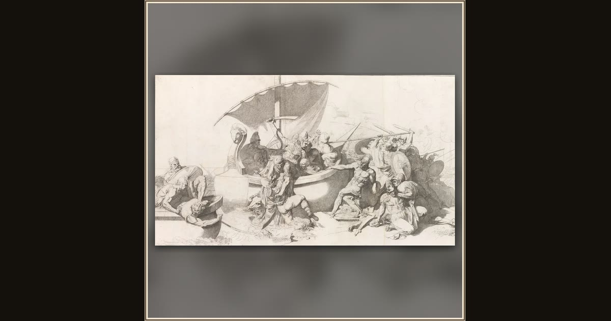

Slag bij Marathon
Giovanni Battista Romero, after Luigi Sabatelli (I) · 1804 · rijksmuseum
Romero's etching after Sabatelli depicts combat around a ship at Marathon; Herodotus says Cynegirus fell after his hand was severed while gripping a ship (6.114.1) Explore its place in Herodotus's Histories, Book VI, chapter 280.